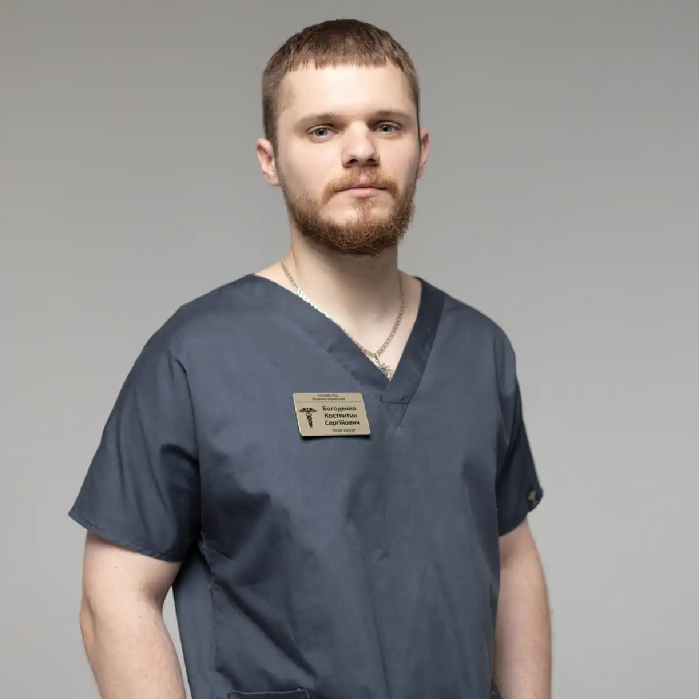

+38(068) 79 72 782
+38(068) 79 72 782Нарколог додому Харків
Допомога без зайвих питань


Безкоштовна консультація, працюємо цілодобово 24/7
Допомога без зайвих питань
Виклик нарколога додому в Харкові — це швидкий і безпечний спосіб отримати професійну медичну допомогу при алкогольній або наркотичній інтоксикації, запої, сильному похміллі або погіршенні стану після вживання психоактивних речовин. Домашній формат лікування дозволяє стабілізувати пацієнта без зайвого стресу, госпіталізації та очікування в чергах. Це особливо важливо в ситуаціях, коли людина ослаблена, відчуває тривожність, запаморочення, нудоту або не може самостійно дістатися до клініки.
Кваліфікований лікар-нарколог проводить огляд, оцінює стан організму, вимірює тиск, пульс, сатурацію, збирає анамнез і підбирає індивідуальну терапію. За потреби одразу проводиться інфузійна терапія (крапельниця), спрямована на зняття інтоксикації, відновлення водно-електролітного балансу та підтримку життєво важливих функцій. Склад крапельниці підбирається суворо індивідуально і може включати дезінтоксикаційні розчини, вітаміни, препарати для підтримки печінки, серцево-судинної системи та нервової регуляції. Такий комплексний підхід допомагає не лише полегшити симптоми, а й прискорити відновлення організму після токсичного навантаження.
Лікар контролює стан пацієнта протягом усієї процедури, відстежує реакцію організму і за потреби коригує лікування. Це робить допомогу вдома безпечною та зіставною за ефективністю з клінічним лікуванням, при цьому пацієнт залишається у звичній і комфортній обстановці. Окрім зняття гострого стану, нарколог дає рекомендації щодо подальшого відновлення, прийому підтримувальних препаратів, режиму сну та харчування. За потреби спеціаліст може запропонувати подальше лікування залежності, консультацію щодо кодування від алкоголізму або направити пацієнта на комплексну терапію та реабілітацію.
Своєчасний виклик нарколога додому в Харкові дозволяє запобігти ускладненням з боку серця, печінки, нервової системи та психіки, скоротити період відновлення і швидше повернути людину до стабільного самопочуття. Чим раніше надана медична допомога, тим легше проходить детоксикація і тим нижчий ризик повторного погіршення стану.
Терміновий виклик нарколога необхідний, якщо у пацієнта спостерігаються ознаки вираженої інтоксикації або погіршення самопочуття після вживання алкоголю або наркотиків. У подібних станах організм зазнає серйозного токсичного навантаження, порушується робота серцево-судинної системи, печінки, нервової системи та обмінних процесів. Без своєчасної медичної допомоги стан може прогресувати і призвести до небезпечних ускладнень. Основні показання для термінового виклику нарколога додому:
Також термінова допомога лікаря потрібна, якщо у пацієнта є хронічні захворювання серця, печінки, діабет, похилий вік або раніше вже виникали ускладнення після запоїв або вживання психоактивних речовин. У таких випадках ризик погіршення стану значно вищий, тому медичне спостереження особливо важливе. Лікар-нарколог вдома проводить огляд, оцінює тяжкість стану і за потреби одразу розпочинає детоксикаційну терапію. Своєчасне втручання дозволяє знизити токсичне навантаження, стабілізувати тиск, нормалізувати сон і загальне самопочуття пацієнта.
У подібних ситуаціях важливо не відкладати звернення за медичною допомогою, адже інтоксикація може призвести до ускладнень з боку серця, печінки та нервової системи, а також до затяжного відновлення. Чим раніше викликаний спеціаліст, тим швидше і безпечніше вдається стабілізувати стан пацієнта та запобігти розвитку тяжких наслідків.
Після виклику нарколог приїжджає за вказаною адресою максимально швидко, що особливо важливо при вираженій інтоксикації, запої або різкому погіршенні самопочуття. Оперативний виїзд лікаря дозволяє своєчасно розпочати медичну допомогу та знизити ризик ускладнень. На місці лікар-нарколог проводить комплексну оцінку стану пацієнта та виконує необхідні медичні дії:
дає рекомендації щодо подальшого лікування, відновлення та профілактики повторних епізодів
За потреби лікар може скоригувати терапію прямо під час процедури, щоб забезпечити максимальну безпеку та ефективність лікування. Такий індивідуальний підхід особливо важливий при тривалих запоях, тяжких інтоксикаціях або наявності супутніх захворювань. Усі процедури виконуються з використанням сертифікованих препаратів і сучасних медичних стандартів. Лікар контролює реакцію організму на лікування, що робить допомогу вдома безпечною та ефективною. Після стабілізації стану пацієнт отримує детальні рекомендації щодо режиму, харчування, прийому препаратів і подальшого спостереження.
Нарколог займається діагностикою, лікуванням і профілактикою залежностей, а також гострих і хронічних станів, пов’язаних із вживанням алкоголю, наркотиків та інших психоактивних речовин. Це лікар, який працює не лише з наслідками вживання, а й із причинами погіршення стану: токсичним навантаженням на організм, порушеннями сну, тривожністю, змінами тиску, роботи серця та нервової системи. Важливо, що нарколог оцінює ризики й підбирає тактику допомоги індивідуально — з урахуванням віку, супутніх захворювань, тривалості вживання та поточних симптомів.
Окремо варто зазначити, що наркологічна допомога часто необхідна пацієнтам із супутніми захворюваннями — гіпертонією, серцево-судинними проблемами, захворюваннями печінки, діабетом. У таких випадках самолікування особливо небезпечне: неправильно підібрані препарати або різка відміна алкоголю можуть погіршити стан. Тому медичний контроль і коректна терапія значно підвищують безпеку лікування та прискорюють відновлення.
Після стабілізації стану нарколог не обмежується лише «зняттям симптомів». Лікар оцінює, наскільки високий ризик повторного запою або рецидиву, і пропонує подальші кроки, які допомагають закріпити результат. Це може бути підтримувальна терапія на період відновлення, план лікування залежності, рекомендації щодо психотерапії, а також підбір методів, спрямованих на зниження потягу та запобігання повторним епізодам. Також нарколог може рекомендувати подальше лікування, кодування від алкоголізму (за медичними показаннями), консультації спеціалістів і реабілітацію, якщо необхідно комплексно працювати із залежністю. Такий підхід допомагає не просто тимчасово полегшити стан, а перейти до стабільного відновлення й повернути людині контроль над життям і здоров’ям.
Вартість виклику нарколога в Харкові починається від 2199 грн
Анонімність — один із головних принципів сучасної наркологічної допомоги. Для багатьох сімей саме конфіденційність стає вирішальним фактором, який допомагає не відкладати звернення до лікаря. Виклик нарколога додому в Харкові проходить максимально делікатно і без зайвого розголосу — пацієнт отримує допомогу у звичній обстановці, а близькі зберігають спокій і контроль над ситуацією.
Анонімність не знижує якість лікування. Навпаки, конфіденційний формат допомагає пацієнту розслабитися і спокійно прийняти допомогу, що підвищує ефективність терапії. Лікар спілкується коректно, без оцінок і тиску, пояснює тактику лікування зрозумілою мовою, відповідає на запитання та дає рекомендації, як безпечно пройти період відновлення. Це дозволяє звернутися по допомогу без страху розголосу — особливо коли проблема зачіпає роботу, сім’ю, соціальні контакти або просто викликає внутрішнє напруження й сором. Чим раніше пацієнт отримує професійну підтримку, тим швидше вдається стабілізувати стан і знизити ризик повторних епізодів.
Щоб викликати нарколога додому в Харкові, достатньо зробити кілька простих кроків — процедура організована так, щоб допомогу можна було отримати швидко, без зайвих запитань і бюрократії. Особливо важливо, що попередня консультація допомагає правильно оцінити ситуацію і підготувати все необхідне до приїзду лікаря. Чим точніше описані симптоми й обставини, тим швидше доктор зможе підібрати тактику лікування і привезти з собою потрібні препарати. Порядок виклику нарколога додому:
Після прибуття лікар діє за медичним протоколом: проводить огляд, вимірює основні показники, оцінює ступінь інтоксикації та ризики ускладнень, потім підбирає індивідуальну схему терапії. Якщо показана крапельниця, інфузійна терапія проводиться під контролем спеціаліста з подальшою оцінкою динаміки стану. Наприкінці візиту пацієнт і близькі отримують чіткі рекомендації: режим, відновлення, підтримка сну, харчування, подальші кроки для запобігання повторним епізодам.
Запій — це небезпечний стан, при якому організм зазнає тяжкої інтоксикації та виснаження. При тривалому вживанні алкоголю порушується водно-електролітний баланс, страждає робота печінки, серця й нервової системи, погіршується сон, посилюється тривожність, знижується загальний ресурс організму. Самостійний вихід із запою часто супроводжується різким погіршенням самопочуття: посилюється слабкість, з’являються стрибки тиску, тремор, пітливість, дратівливість і безсоння. У деяких випадках спроби «перетерпіти» або різко припинити вживання без медичного контролю підвищують ризик ускладнень і затягують відновлення.
Виклик нарколога додому в Харкові дозволяє отримати професійну допомогу в комфортних умовах і розпочати лікування своєчасно, без поїздок до клініки та зайвого стресу. Лікар оцінює стан пацієнта, враховує тривалість запою, частоту вживання, супутні захворювання та можливі протипоказання, після чого підбирає індивідуальну схему детоксикації та підтримки організму.
Під час візиту спеціаліст проводить огляд, контролює основні показники (тиск, пульс, сатурацію), оцінює ступінь інтоксикації та ризики ускладнень. За потреби проводиться інфузійна терапія (крапельниця), спрямована на м’яке зняття інтоксикації, поповнення рідини, відновлення водно-електролітного балансу, підтримку обмінних процесів і покращення загального стану. Додатково лікар може призначити симптоматичну терапію для нормалізації сну, зниження тривожності, зменшення тремору та стабілізації самопочуття.
Нарколог не обмежується лише «зняттям гострих симптомів». Після стабілізації стану пацієнт отримує рекомендації щодо подальшого відновлення: режиму сну, питного режиму, харчування, підтримувальних препаратів і спостереження. За потреби лікар підкаже подальші варіанти лікування алкогольної залежності — консультації, план терапії, методи профілактики повторних епізодів і комплексний підхід до зниження потягу до алкоголю. Чим раніше надана допомога, тим легше проходить відновлення: швидше нормалізується сон, зменшується тривожність, стабілізуються показники тиску, знижується навантаження на серце й печінку та зменшується ймовірність ускладнень з боку нервової системи. Своєчасний виклик нарколога додому в Харкові — це безпечний крок, який допомагає зупинити погіршення стану та розпочати шлях до відновлення без ризику і зайвого стресу.
Сильне похмілля може супроводжуватися головним болем, вираженою слабкістю, тахікардією, нудотою, сухістю в роті та зневодненням. Часто додаються тремтіння в руках, тривожність, дратівливість, підвищена пітливість, стрибки тиску та порушення сну. Такий стан не завжди минає «сам по собі», особливо якщо напередодні було багато алкоголю, погане харчування, хронічні захворювання або кілька днів вживання поспіль. У таких випадках організму потрібна медична підтримка, щоб швидше й безпечніше відновитися.
Лікар-нарколог вдома проводить медичну детоксикацію, спрямовану на швидке полегшення симптомів і відновлення основних функцій організму. Перед початком терапії спеціаліст оцінює стан пацієнта, вимірює тиск, пульс і сатурацію, уточнює наявність протипоказань і підбирає індивідуальний склад крапельниці. Це важливий момент: лікування підбирається не «за шаблоном», а з урахуванням симптомів, віку та супутніх проблем (наприклад, гіпертонії, хвороб печінки або серця). Крапельниця при сильному похміллі допомагає:
Додатково інфузійна терапія сприяє стабілізації тиску, покращенню сну та зниженню тривожності, що прискорює відновлення і допомагає уникнути повторного погіршення стану. Після процедури лікар дає рекомендації щодо режиму, харчування та відновлення, щоб закріпити результат і знизити ризик ускладнень.
Алкогольна інтоксикація потребує медичного контролю, особливо якщо стан погіршується швидко або симптоми виражені сильно. Алкоголь і продукти його розпаду чинять токсичний вплив на нервову систему, серце, судини й печінку, а також спричиняють зневоднення та порушення обмінних процесів. У таких ситуаціях важливо не зволікати зі зверненням, адже «перетерпіти» вдома без нагляду лікаря може бути небезпечно, особливо у людей із гіпертонією, захворюваннями серця, печінки або при тривалому вживанні. Особливо насторожити мають такі ознаки:
Своєчасний виклик нарколога додому в Харкові дозволяє швидко оцінити тяжкість інтоксикації, проконтролювати життєві показники (тиск, пульс, сатурацію), підібрати безпечну терапію та розпочати детоксикацію. За потреби лікар проводить інфузійну терапію (крапельницю), спрямовану на зниження токсичного навантаження, відновлення рідини й електролітів та стабілізацію стану. Після покращення самопочуття спеціаліст дає рекомендації щодо подальшого відновлення, режиму сну й харчування, а також профілактики повторних епізодів. Своєчасне звернення знижує ризик ускладнень і допомагає швидше повернути пацієнта до стабільного стану.
Наркотична інтоксикація може супроводжуватися серйозними порушеннями роботи нервової системи, серця та психіки. Залежно від речовини й дози стан здатний розвиватися швидко і непередбачувано: з’являються виражена тривога, панічні реакції, сильна слабкість, сплутаність свідомості, порушення сну, різкі перепади тиску й пульсу. Небезпека наркотичної інтоксикації в тому, що симптоми можуть посилюватися хвилеподібно, а сам пацієнт часто не здатний адекватно оцінити тяжкість того, що відбувається.
У таких ситуаціях особливо важливо, щоб допомога була медичною і контрольованою. Лікар-нарколог оцінює загальний стан пацієнта, уточнює можливі фактори ризику (супутні захворювання, хронічні проблеми із серцем/тиском, алергії), контролює життєво важливі показники та підбирає індивідуальну тактику лікування. Комплексна терапія спрямована на зниження токсичного навантаження, стабілізацію самопочуття та профілактику ускладнень з боку серцево-судинної й нервової систем. За потреби лікування коригується прямо в процесі спостереження — це принципово важливо при нестабільній динаміці симптомів.
Домашній формат допомоги особливо важливий, якщо пацієнту важко пересуватися, він ослаблений, дезорієнтований або потрібна термінова медична підтримка без зайвого стресу. У звичній обстановці легше забезпечити спокійні умови, виключити додаткові подразники та швидше розпочати терапію. Також це знижує ризик погіршення стану дорогою і допомагає оперативно приступити до стабілізації. Після покращення самопочуття лікар дає рекомендації близьким: як поводитися в найближчі години, на що звертати увагу, які симптоми потребують негайного реагування, як організувати режим сну, питний режим і відновлення. За потреби спеціаліст запропонує подальший план лікування залежності — консультації, підтримувальну терапію та варіанти довгострокової допомоги, щоб знизити ризик повторних епізодів і закріпити результат.
Домашній формат лікування безпечний, тому що допомога надається за медичними стандартами, але в умовах, де пацієнту легше перенести процедуру і швидше стабілізуватися. Особливо це актуально при запої, вираженій інтоксикації, сильній тривожності та порушенні сну — коли зайвий стрес, дорога й очікування можуть лише погіршити самопочуття. У звичній обстановці людині простіше розслабитися, знизити внутрішнє напруження і спокійно прийняти лікування, а це напряму впливає на ефективність терапії та швидкість відновлення. Безпека домашнього лікування забезпечується тим, що лікар діє не «за шаблоном», а за результатами огляду та оцінки стану. Спеціаліст враховує тривалість вживання, вираженість симптомів, вік, наявність хронічних захворювань, алергії та протипоказання. Такий підхід особливо важливий, коли у пацієнта є гіпертонія, порушення серцевого ритму, захворювання печінки, цукровий діабет або раніше спостерігалися ускладнення після запоїв. У цих випадках самолікування може бути небезпечним, а медичний контроль дозволяє обрати правильну тактику та знизити ризики.
Під час процедури лікар постійно спостерігає пацієнта і контролює ключові показники — тиск, пульс, сатурацію, загальне самопочуття, реакцію на терапію. Це принципова відмінність від спроб «капатися самостійно» або приймати препарати без призначення. За потреби спеціаліст коригує лікування прямо на місці: змінює швидкість інфузії, доповнює симптоматичну підтримку, враховує динаміку стану й переносимість терапії. Усе це робить допомогу вдома не лише комфортною, а й медично обґрунтованою. Ще один важливий фактор — використання перевірених препаратів і сертифікованих розчинів, які підбираються за показаннями. Лікування спрямоване не на «маскування» симптомів, а на зниження токсичного навантаження, відновлення водно-електролітного балансу, підтримку обмінних процесів і стабілізацію роботи нервової та серцево-судинної систем. У результаті зменшується слабкість, знижується тривожність, покращується сон, вирівнюються показники тиску й загальний стан стає більш стабільним.
Домашній формат також знижує ризик погіршення стану, який може виникати під час транспортування пацієнта. При інтоксикації, вираженій слабкості, запамороченні та стрибках тиску дорога до клініки інколи стає додатковим стресом для організму. Вдома лікар може розпочати допомогу одразу, без затримок, і забезпечити більш спокійне відновлення. Крім того, поруч знаходяться близькі, що часто допомагає пацієнту почуватися безпечніше та знижує емоційне напруження. Додатково домашній виїзд дозволяє лікарю оцінити загальні умови і дати практичні рекомендації сім’ї: як організувати відновлення в найближчу добу, як налагодити сон, питний режим і харчування, які ознаки потребують підвищеної уваги, а які є очікуваними на тлі інтоксикації. Це важливо для профілактики повторного погіршення, адже після зняття гострого стану організму потрібен час на відновлення, і грамотний супровід у перші дні помітно підвищує результат лікування.
Якщо лікар бачить, що стан пацієнта тяжкий або присутні фактори високого ризику, спеціаліст чесно зазначає це і рекомендує подальше спостереження або стаціонарне лікування. Таке рішення приймається в інтересах безпеки — коли потрібна більш тривала терапія, цілодобовий контроль або додаткові обстеження. У результаті пацієнт отримує допомогу там, де це максимально ефективно: вдома — коли це безпечно і достатньо, і в стаціонарі — коли потрібна розширена медична підтримка. Виклик нарколога додому — це не просто спосіб «стати легше». Це медичний захід, який знижує ризик ускладнень, допомагає стабілізувати стан і робить відновлення більш прогнозованим. А після нормалізації самопочуття лікар може запропонувати наступний крок — план профілактики рецидиву та варіанти подальшого лікування залежності, щоб проблема не поверталася знову.
Наркологічна допомога вдома в Харкові доступна цілодобово — без вихідних і свят. Це особливо важливо при гострих станах, коли допомога потрібна негайно, а очікування може призвести до погіршення самопочуття. Інтоксикація, запій, тяжке похмілля або наслідки вживання психоактивних речовин нерідко загострюються ввечері, вночі або у вихідні дні, коли людині складно швидко отримати кваліфіковану допомогу. Цілодобовий формат виїзду лікаря дозволяє не відкладати лікування і розпочати стабілізацію стану в той момент, коли це дійсно необхідно.
Цілодобовий виїзд нарколога додому допомагає отримати медичну підтримку в будь-який час доби, коли пацієнту важко пересуватися або є ризик ускладнень. Лікар приїжджає за адресою, проводить огляд, контролює життєво важливі показники, оцінює ступінь інтоксикації та підбирає індивідуальну схему терапії. Такий підхід дає можливість розпочати лікування без затримок, знизити токсичне навантаження на організм і запобігти розвитку тяжких наслідків з боку серця, нервової системи та печінки.
Звернення до нарколога — це перший крок до відновлення здоров’я та повернення до стабільного життя. Цілодобовий виклик нарколога додому в Харкові від UmbrellaPlus дозволяє отримати допомогу вчасно, безпечно стабілізувати стан і розпочати лікування без зайвого стресу та ризиків. Чим раніше ви звертаєтеся по професійну медичну підтримку, тим швидше організм відновлюється і тим більше шансів запобігти ускладненням і повторним епізодам. Якщо ситуація потребує допомоги — краще не чекати, а діяти одразу.
Телефон для консультації та виклику нарколога в Харкові: +38(050-021-69-57)
Так, ми суворо дотримуємося повної конфіденційності на всіх етапах лікування. Інформація про пацієнта, діагноз та проходження терапії не передається третім особам. Звернення до нас не тягне за собою постановку на облік. Ви можете бути впевнені у безпеці та анонімності.
Програма лікування розробляється індивідуально після консультації з фахівцем. Враховуються вид залежності, її тривалість, фізичний та психологічний стан пацієнта. Такий підхід дозволяє підвищити ефективність терапії та знизити ризик зриву. Ми не використовуємо шаблонні рішення.
Так, ми супроводжуємо пацієнтів і після основного курсу лікування. Проводяться консультації, рекомендації щодо адаптації та профілактики рецидивів. За потреби можлива подальша психологічна підтримка. Це допомагає зберегти результат та повернутися до повноцінного життя.
Анонимно

Ну в хлопців просто золоті руки й світла голова, мене капали Олексій та Владислав, буквально за декілька сеансів я наче заново народився, до цього пив більше 3х тижнів, не міг зупинитись, дуже радий що знайшов саме цих спеціалістів, всім рекомендую
Анонимно
В течение нескольких лет я злоупотреблял алкоголь, что привело к увольнению с работы и вызвало у меня мысли о суициде. Понимая, что такой образ жизни неприемлем, я обратился за помощью в клинику “Амбрела”. Здесь я смог преодолеть свою зависимость от спиртного благодаря заботливым и опытным врачам, а также эффективной системе лечения. Спустя более года я полностью избавился от желания употреблять алкоголь, и теперь моя жизнь вернулась в норму. Я даже не приближаюсь к спиртному! Благодарю врачей клиники “Амбрела” за их помощь и заботу.
Анонимно
Я обращался за помощью в различные клиники, пытаясь избавиться от своей зависимости от алкоголя, но без особых успехов. Никак не мог справиться с желанием прибегнуть к бутылке, пока друг не посоветовал мне обратиться в центр “Амбрелла”. Я записался на прием и был поражен заботливым отношением к пациентам. Уже прошло два года, и теперь я смотрю на алкоголь с абсолютной равнодушием, активно занимаюсь спортом и улучшил отношения в семье. Благодаря центру “Амбрелла” моя жизнь была спасена от алкогольной зависимости!
Анонимно
Хочу выразить свою благодарность врачам из центра алкоголизма “Амбрела” за то, что они буквально спасли мою жизнь. В течение последнего года я сильно увлекался питьем, и все это привело к катастрофическим последствиям. Хотя я ходил на терапевтические сеансы, но безрезультатно. Тогда я нашел адрес клиники “Амбрела” в интернете, изучил отзывы и информацию о центре, и записался на прием. Там мне сразу предложили методику лечения, которая помогла не только справиться с физической ломкой, но и психической зависимостью от алкоголя. Не буду распространяться, скажу только одно - после пребывания в этой клинике я стал другим человеком, и навсегда забыл, что такое привкус алкоголя. Больше меня не тянет на это! Я искренне верю, что в центре “Амбрела” трудятся настоящие целители душ!
Анонимно
После сложного развода мой сын начал подавлять свою обиду и горе употреблением алкоголя. Он старался скрывать это от меня, но я, как мать, почувствовала, что что-то не так. В конечном итоге, ситуация стала критической. Моя знакомая посоветовала мне обратиться в клинику “Амбрела”. Я была приятно удивлена их работой! Они помогли сыну преодолеть очередной период злоупотребления алкоголем, и с тех пор прошел уже более года, и он совсем не пьет.
Анонимно
Благодаря вашей помощи, моя семья была спасена. Я с трудом уговорила мужа начать лечение, и последний каплей был пьяное ДТП. К счастью, в аварии никто не пострадал, но это был для него сигнал к действию. Он наконец согласился пройти курс лечения на дому, в стационар не хотел ложиться. Лечение было трудным, и были моменты, когда срыв был настолько близок, но благодаря вашему центру Амбрелла мы справились с этим.
Анонимно
Для меня эта клиника стала настоящим спасением! Долгое время я упорно отказывался от лечения, уверен был, что со мной все в порядке. Но к счастью, семья уговорила меня попробовать. И сегодня я чувствую себя невероятно счастливым, осознавая, что мне абсолютно не нужен алкоголь. Огромное спасибо за помощь и поддержку, которые я получил здесь! Я благодарен вам за новую возможность жить полноценной и счастливой жизнью!
Анонимно
Выражаю благодарность ребятам, которые оказали мне помощь и не отвернулись. Уже 10 месяцев я остаюсь чистой. Благодарю за то, что помогли найти новый путь в моей жизни.
Номер телефону:
+380 (68) 797 27 82
+380 (50) 021 69 57
Адресу наркологічного центра вашого міста уточнюйте за
телефоном
Працюємо: Київ, Одеса, Львів, Харків, Дніпро, Запоріжжя,
Черкасах, Чугуєві, Чорноморську, Кам'янському
Telegram: t.me/umbrellaplus
Графік работы: Цілодобово